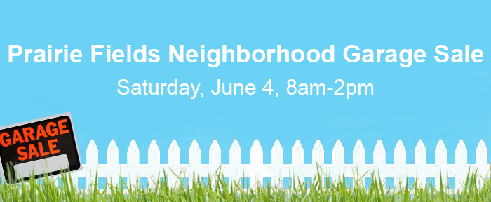

Welcome new board members Brian Kesler and Kyle Kirchhoefer and returning board members Greg Sopa, and Tim Yardley.
Thank you for your service Rachel Shekar!
Where: Prairie Fields Neighborhood
When: Sunday, December 18th 5:30PM to 7:30PM
Planning
We will be planning at the next HOA Board meeting at Carrie Busey Elementary on Monday, November 14th at 8pm. If you'd like to help out in any capacity of the planning please attend.
Treat Tables - If you'd like to host, please e-mail board@prairiefieldshoa.comWe will be looking for folks to provide and monitor the treat tables/voting stations. Each table will be given $30 to purchase the treats. We would like to focus on having these tables stationed at corners throughout the neighborhood to make it easy for visitors to find. This year we are looking to have ballot style voting sheets that people can carry with them as they look at the houses.
PRIZES!
As was the case last year, there will be trophies for 1st, 2nd, and 3rd Place as well as honorable mention ribbons. We will also have a fun prize for one random participating house!
It's time to cast your vote for the four open positions on the board for 2017/18! Voting will close November 30th, 2016.
You can access the electronic ballot here.
To opt for a paper ballot, please drop a note in the HOA dropbox.
One vote per household. Homeowners must be a member in good standing to vote in the election, and not owe the association more than $10. You can access the past due list by clicking here.
If you are interested in running for a seat on the PF HOA Board of Directors, you can download an application form here.
The day to day operations of the PF HOA are run by an all-volunteer Board of Directors, along with help from many other committee volunteers.The Board establishes the annual dues assessment and is responsible for using the money assessed to maintain and improve HOA property and offer programs which are of value to Prairie Fields residents, thereby increasing the value of the neighborhood. If you have 1-2 hours a month to donate to the neighborhood, you are encouraged to run one of the 3 upcoming vacancies on the Board for a term which begins January 1, 2017 and runs through December 31, 2017. Applications must be submitted by October 21.
This year, voting will be conducted electronically. You can opt for paper ballots by dropping a note in the HOA dropbox. Homeowners must be a member in good standing to vote in the election, and not owe the association more than $10. You can access the past due list by clicking here.
For more information, please email board@prairiefieldshoa.com
Calling all kids and those young at heart! The Annual Halloween Costume parade will be held October 31st at 5:30 pm. Participants should meet at the parking lot at Prairie Fields Park at 5:15 for the Costume Contest.
Prizes will be rewarded before the parade. There will be awards for best:
The parade route will leave the park and go west on Gentian St., north on Tickseed Ave., east on Dropseed Dr., and south at Prairie Rose Lane where they will return to the Park. Residents are also encouraged to line the parade route and cheer the participants along.
Construction has now begun on Phase 14 of Prairie Fields. The layout for the new the new housing phase being constructed on the west of the PF subdivision is available here.
As with previous phases, phase will not be part of the HOA until it is completed. Until then, it is under the control of Signature Homes.
School has started and there are children walking to Carrie Busey and to the neighborhood bus stops. Please drive carefully!
You can help by slowing down, being sure to come to a complete stop and avoiding distractions. If possible, avoid the roads by Carrie Busey before and after school. Children should walk on the sidewalks as much as possible, and only cross on a crosswalk or when a guard is present
If you see speeding in our neighborhood contact the Sheriff's Department patrol commander, Lt. Brian Mennenga with your observations including specific information that may better engage in enforcement (eg more specific times, directions, days of week that are worse, particular vehicle, etc.).
Meet at Prairie Fields park shortly before 9am with your bikes/strollers/wagons/children and pets decorated for the festivities! We will depart the park at 9am and return around 9:15am.
The route will be the usual "Prairie Fields Parade Route" starting on Gentian, heading North on Tickseed, and East on Dropseed back to the park. As we did last year, the Savoy Fire Department will be on hand to celebrate with us as well.
Please join your neighbors in celebrating!
Saturday, June 11th from 2PM-5PM we will be hosting our first neighborhood block party!
Food vouchers for first 100 PF visitors!
The Prairie Fields Neighborhood Watch is up and running! If you would like to be added to the Neighborhood Watch email list, please add your contact information here: https://groups.google.com/a/prairiefieldshoa.com/forum/#!forum/watch
Remember, if you see anything suspicious or out of the ordinary, call 911 first before spreading the word through the Neighborhood Watch email list or on Nextdoor.
With collective effort, Prairie Fields will remain a safe place to live, work, play, or attend school!
This year's neighborhood sale will be advertised for Saturday, June 4 from 8-2.
Deputy Oliger will be discussing how we can keep Prairie Fields a safe place to live.
Friday, January 22 7:30-8:30
Carrie Busey
The HOA Annual Meeting will be held on Thursday. January 21st at 7pm in the Carrie Busey library.
This is your chance to:
All residents of Prairie Fields are encouraged to attend. Annual Meeting Agenda (subject to change)
Welcome new board members MariAnne Schmidt and Dan Harmon and returning board member PJ Trautman.
Thank you for your service Tyler Kuntz and Eric Ray!
Thank you EVERYONE who participated and/or went around the neighborhood to view the lights. It was a great turnout and the weather actually held up for the event. In all we had 85 votes for 21 different houses! Next year we plan to make it even better! As it gets closer we will probably look to create a committee to help planning and make it even better for everyone.
First Place - 303 Trefoil
Second Place - 900 Phlox
Third Place - 501 Trefoil
Honorable Mention - 414 Gentian
Honorable Mention - 208 Goldenrod
Honorable Mention - 603 Indigo
Street with the most votes - Trefoil - 31 votes
We also have trophies and ribbons for the top three houses and ribbons for the honorable mentions. Please feel free to display those proudly somewhere on your house.
Also, the board drew one of the houses that received votes for a 20" Leg Lamp Award. And the winner is 900 Phlox!
We raised $59 and some change for the Crisis Nursery and also 2 bags of food and toy donations!
If you have any ideas for the 2016 competition, please email the Board of Directors!